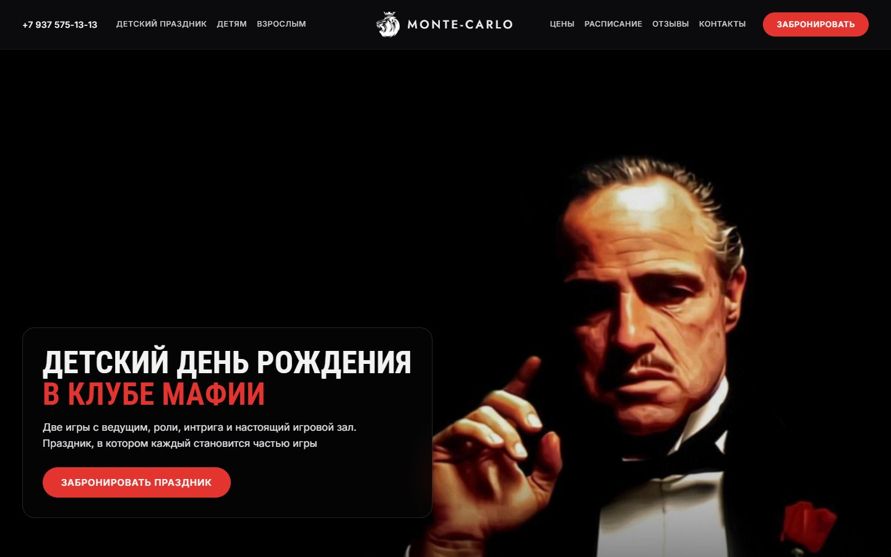
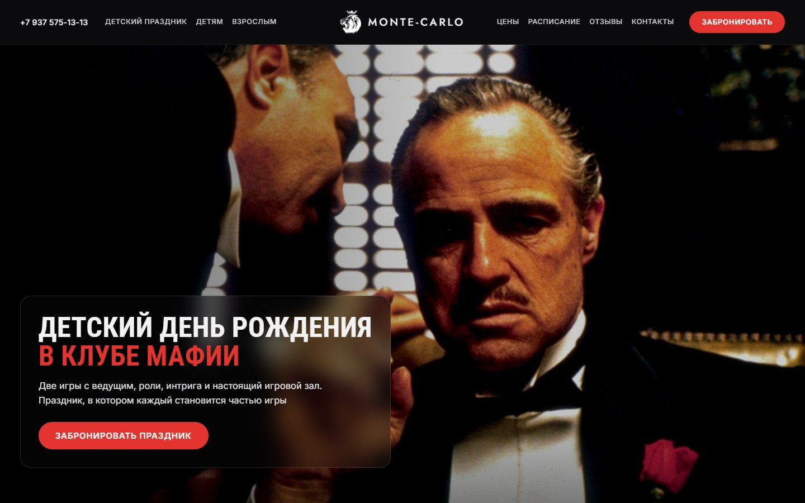
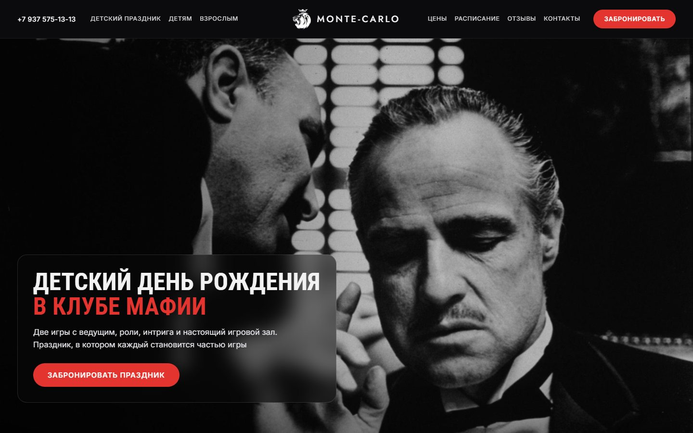
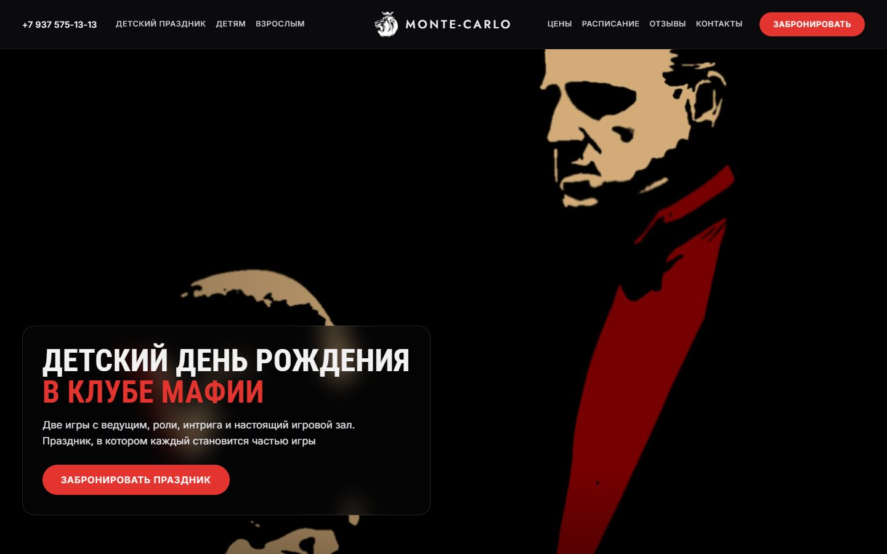
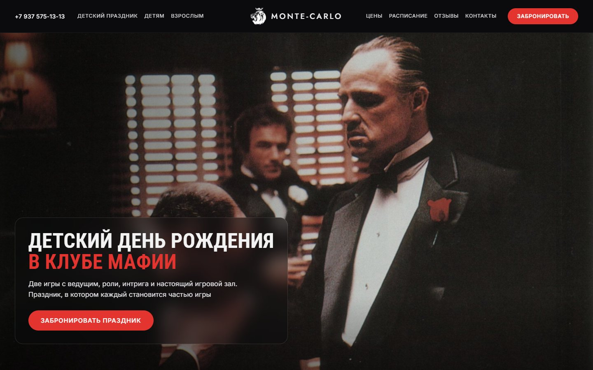

1
Дон с розой
Классический кадр: дон Корлеоне на чёрном фоне, жест рукой, красная роза. Лицо справа, слева чисто под карточку. Сейчас стоит в макете
ОткрытьКадры и рисунок из фильма «Крёстный отец» (1972), найдены на wallpapers.com в Full HD. Слегка притемнены слева под карточку. В макете уже новые тексты, «Детям» вместо «Классом» и красное «в клубе мафии». Назови номер

Классический кадр: дон Корлеоне на чёрном фоне, жест рукой, красная роза. Лицо справа, слева чисто под карточку. Сейчас стоит в макете
Открыть


Графичный рисунок: дон и красный лацкан на чёрном. Красный совпадает с акцентом сайта
Открыть